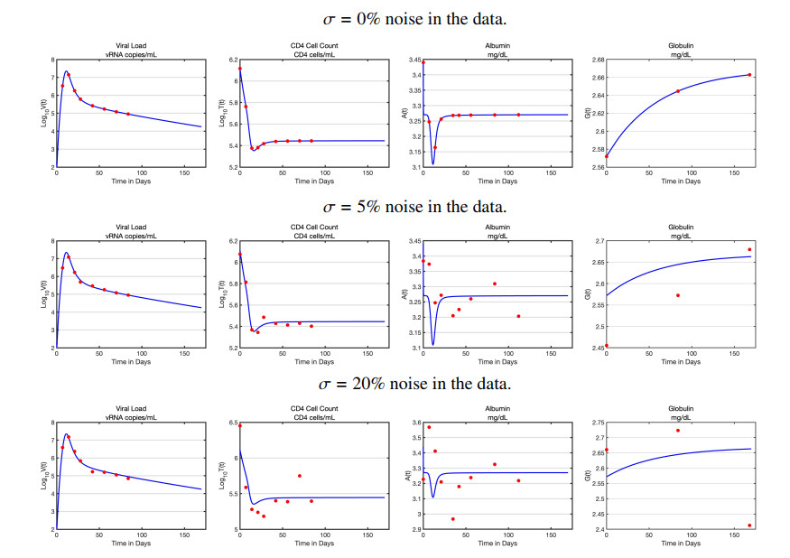

Epidemiological Modeling @ FAU, Tuncer Group

Researcher in the mathematical modeling of disease at the FAU Dept. of Mathematics, mentored by Dr. Necibe Tuncer.
Utilized systems of ordinary differential equations (ODEs) to study the within-host dynamics of HIV infection. Co-First on two papers:
- "Validation of a Multi-Strain HIV Within-Host Model with AIDS Clinical Studies" (Mathematics; submitted)
- "Modeling the interplay between albumin-globulin metabolism and HIV infection" (Mathematical Biosciences and Engineering; doi: 10.3934/mbe.2023865)